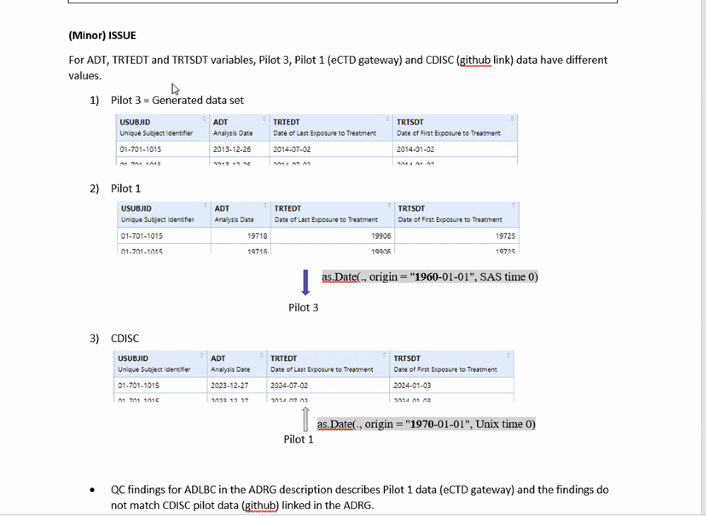

View Attendee List
- Ben Straub (GSK)
- Eva Li
- Heidi Curinckx (Johnson & Johnson)
- HyeSoo Cho (FDA)
- Ismael Alejandro Rodriguez (Appsilon)
- Jane Owens (Phuse & Eli Lilly)
- Joel Laxamana (Roche/Genentech)
- Joseph Rickert (R Consortium)
- Lovemore Gakava (Novo Nordisk)
- Ning Leng (Roche/Genentech)
- Paul Schuette (FDA)
- Saghir Bashir (Argenx)
- Stephanie Lussier (Moderna)
- Steven Hasendinckx (Johnson & Johnson)
- YounKyeong Chang (FDA)
The meeting was recorded and the video is available.
PharmaSUG Conference
- Both Ben Straub (Pilot 3) and Ismael Rodriguez (Pilot 4) gave talks at the recent Pharma SUG conference which was held in Baltimore.
- Both reported that there was a lot of interest in their talks
- Ben reported that he spoke to several people who thought the the FDA only approves SAS submissions.
- Both presentations will be placed in the R Submissions WG GitHub repository.
Coordination with R Package Validation
- Ismael noted that Magnus from a package validation working group approached him about cooperating with the Submissions WG.
- JBR asked Ismael to ask Magnus to write to him and said that we be happy to invite Magnus to our meetings.
Pilot 3
Hye Soo Cho and YounKyeong Chang provided an update on their review of the Pilot 3 submission.
- The FDA eviewers are wrapping up their review.
- There are no major issues.
- They were able to install the Util package from the zip file and review the R programs to drive the ADaM data sets.
- QC of the ADRG did turn up a minor issue regarding inconsistencies among three date variables.
- The discussion of this issue begins at 7:55 in the video and is illustrated in the screen capture below.
- The recommended solution is that the date origin should be specified in ISO 8601 date/time format in the ADRG.
- Joel agreed to review the record of issues with Pilot 3 and see if there are any other parameters that ought to be explicitly mentioned in the ADRG.

Pilot 4
Eric Nantz described progress on the Pilot 4 Submission.
- The end of June is still our target for the WebAssembly version of Pilot 4.
- The plan is to do the container version at a later time after the WebAssembly version has been reviewed.
- The question was asked if there are any special rules about package downloads.
- Paul Schuette stated that downloading from CRAN is preferable, that in addition to the serialization FDA Security has mentioned downloads as a potential security problem, but that as far as he knows there are no regulations.
- Eric pointed out that the Docker version of Pilot 4 also requires an image download.
- Eric and Paul will meet to discuss this issue.
- Eric will provide ADRG instructions and he and Paul will investigate,
- Paul noted that the FDA has recently approved WSL (Windows System Linux)
ADRG
There has been discussion within the working group as to whether we should investigate best practices for writing ADRGs for R based submissions. JBR noted that recent comments in issue #112 suggested that we should coordinated with the PHUSE ADRG working group. Discussion begins at 29:00 into the video.
- As it turned out Jane Owens (Eli Lilly) who is co-lead of the PHUSE ADRG working group was on the call.
- PHUSE owns the ADRG templates
- They are actively working on updating the templates with respect to R in section 7.1 of the template.
- Pilot 3 has documentation on R packages in Section 7 and in an appendix to the ADRG (Section 9).

- PHUSE got its starting point for updating the ADRG for R from J&J which Heidi Curinckx confirmed is based on J&J’s participation in the Submissions WG.
- The PHUSE WG will publish their updated template and then send it out for review
- The Submissions WG and the PHUSE ADRG WG will cooperate and share information.
- JBR invited Jane and other members of her WG to attend future meetings.
R Versions Blog Post
A small group led my Ning Leng is working on a blog post aimed at generating consensus about what versions of R might be appropriate for R based submissions at any point in time.
- The post has been revised to reelect the Submissions WG point of view and ends with a request for readers to comment in an issue that that we will open up on our GitHub repository.
- The post includes paragraphs on how four companies Roche, Lilly, GSK, Pfizer deal internally with versioning and package management issues
- Unfortunately, we must remove the quote from Paul because including it would require FDA approval.
- Will also remove the FDA logo.
ACTION:
- Ning and the other authors will finalize the text.
- JBR will send a MS word version of the post to Paul for final review.
Next meeting
- Because the July meeting is scheduled on the US July 4th holiday weekend and because of travel to the useR! conference the July meeting will be cancelled. * The next meeting of the submissions WG will be at 9AM Pacific Time on Friday August 2, 2022.